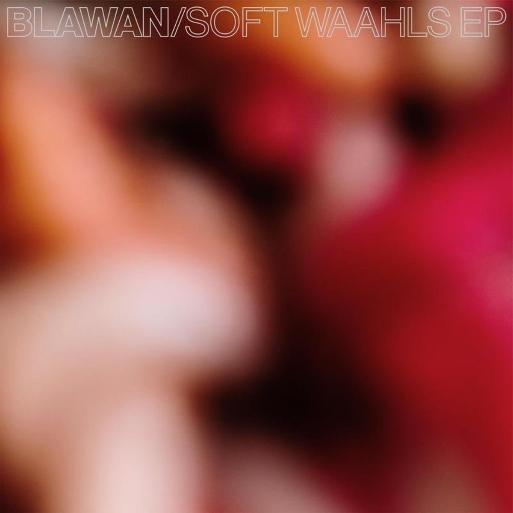

Blawan- Soft Waahls



Género: Unknown
Sello: Ternesc
Año: 2021-06-18
Total de pistas: 6
Información de Producción
| Campo | Información |
|---|---|
| Sello | Ternesc |
| Año | 2021-06-18 |
| Género | Unknown |
| Total de pistas | 6 |
| Art Direction | John Joseph Holt |
| Design | Nat Brown (6) |
| Lacquer Cut By | ≠ |
| Photography By | Joe Conrad Williams |
Tracklist
1. Justsa [4:42]
2. The Sithe [4:43]
3. Silver [4:04]
4. Fizz City [5:19]
5. Fourth Dimensional [5:06]
6. Micro’s [5:13]
Reviews y Menciones
📰 Menciones en Medios
| Medio | Título | Fecha |
|---|---|---|
| mixmag.net | June: 18 albums you need to hear this month - Albums - Mixmag.net | 05/08/2025 |
| mixmag.net | June: 18 albums you need to hear this month - Albums - Mixmag.net | 04/08/2025 |
| mixmag.net | April: 18 albums you need to hear this month - Albums - Mixmag.net | 04/08/2025 |
| mixmag.net | April: 18 albums you need to hear this month - Albums - Mixmag.net | 02/08/2025 |
📝 Reviews y Artículos
| Fuente | Título | Fecha | Origen |
|---|---|---|---|
| albumoftheyear.org | AOTY Summary - Blawan - Soft Waahls (User: 68) | 05/03/2026 | review_aoty |
⭐ Puntuaciones y Críticas
| Plataforma | Puntuación Críticos | Puntuación Usuarios | Enlaces |
|---|---|---|---|
| Album of the Year | - | 68/100 | 🔗 AOTY |